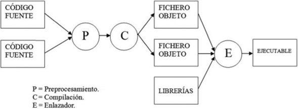

1 - DESARROLLO DE SOFTWARE
¿Qué es el desarrollo de software?
El desarrollo de software es el proceso que tiene lugar desde que un usuario plantea una mejora de su sistema informático hasta que dicha solución (nuevo software creado o modificado) le es entregada para su utilización inmediata.
Proceso de obtención de código ejecutable a partir del código fuente
1. Código fuente:
Es el conjunto de instrucciones escritas por el programador en un lenguaje de programación. Este código es legible por humanos, pero no puede ser entendido directamente por la máquina.
2. Preprocesamiento:
El preprocesador toma el código fuente y realiza operaciones antes de la compilación, como:
- Incluir archivos con
#include. - Reemplazar macros con
#define. - Eliminar comentarios.
El resultado es un código fuente preparado para compilar.
3. Compilador:
El compilador toma el código ya preprocesado y lo traduce a código máquina, pero sin unirlo todavía con otros módulos. El resultado es un fichero objeto que contiene instrucciones en lenguaje máquina, pero incompletas.
4. Fichero Objeto:
Es el resultado de compilar el código fuente. Contiene código máquina parcialmente traducido, pero no ejecutable todavía porque puede depender de otras partes (como funciones en otras bibliotecas o archivos).
5. Librerías:
Son colecciones de funciones ya compiladas que pueden usarse en distintos programas. Estas se vinculan en la fase de enlace.
6. Enlazador (Linker):
Une los códigos objeto y librerías en un archivo ejecutable.
7. Ejecutable:
Es el archivo final que puede ser ejecutado directamente por el sistema operativo. Contiene todas las instrucciones necesarias y ya enlazadas.
Esquema del proceso
Fases de desarrollo de una aplicación
- Planificación del proyecto: Se realiza un estudio de viabilidad para ver si el proyecto es realizable técnica y económicamente.
- Documento de presupuesto:
- Se hace una valoración económica del proyecto.
- Se contemplan los recursos humanos, materiales, técnicos, etc.
- Firma del documento de inicio del proyecto: Es el paso formal que da comienzo oficialmente al proyecto.
- Análisis del sistema:
- Se analizan el estado actual del sistema del cliente.
- Las funciones esperadas.
- Los equipamientos disponibles o necesarios.
- Diseño del sistema:
- Se define la arquitectura hardware y software.
- Se diseñan los componentes del sistema, módulos y estructura de datos a utilizar.
- Codificación:
- Se usa un entorno de desarrollo para crear y modificar los objetos informáticos.
- Se programa todo el sistema en el lenguaje correspondiente.
- Pruebas técnicas (pruebas del programador): Verificación técnica del código por parte del programador.
- Pruebas de usuario:
- El cliente prueba el sistema en entorno simulado con datos ficticios.
- Si todo está correcto, se firma un documento de aceptación.
- Documentación:
- Se elabora documentación técnica y manuales de usuario.
- Implementación (entorno de explotación):
- El software pasa a producción y se monitoriza.
- Se puede revertir si hay errores graves.
- Mantenimiento:
- Se corrigen errores posteriores a la implementación.
- Se realizan ampliaciones o mejoras según necesidades.
Ejemplo práctico: desarrollo de una tienda online
- Planificación del proyecto: Se analiza la viabilidad técnica y económica de crear una tienda online.
- Presupuesto: Se calcula el coste de la web, se presenta al cliente.
- Firma del inicio: El cliente acepta el presupuesto y se inicia formalmente el proyecto.
- Análisis del sistema:
- Requisitos: registro, carrito, compra para usuarios; gestión para administradores.
- Diseño del sistema:
- Estructura de la web: páginas y organización de datos.
- Selección de tecnologías: HTML, CSS, JS, PHP, MySQL...
- Codificación: Desarrollo de funcionalidades clave como login, carrito, administración.
- Pruebas técnicas: Verificación funcional: registros, operaciones, base de datos.
- Pruebas de usuario: El cliente prueba la web en entorno de pruebas.
- Documentación: Manuales y comentarios en el código.
- Implementación: Publicación en servidor real, configuración del dominio y monitorización.
- Mantenimiento: Corrección de errores, incorporación de nuevas funciones.
Tipos de entornos de desarrollo
Los entornos de desarrollo pueden clasificarse según varios criterios:
1. Según la licencia
- Libre: puedes modificar, copiar y distribuir el software (por ejemplo, Eclipse).
- Privativo: requiere licencia de pago o de uso limitado (por ejemplo, Visual Studio Professional).
2. Según el sistema operativo
- Windows, Linux, macOS, etc. Algunos entornos solo funcionan en sistemas concretos, otros son multiplataforma.
3. Según el lenguaje de programación soportado
- Algunos entornos son específicos (por ejemplo, PyCharm para Python).
- Otros permiten múltiples lenguajes (Visual Studio, Eclipse).
Componentes de un entorno de desarrollo (IDE)
- Editor de texto: Donde se escribe el código fuente.
- Compilador: Traduce el código fuente a lenguaje máquina (código objeto).
- Intérprete: Ejecuta el código línea a línea sin necesidad de compilar todo el programa.
- Depurador (Debugger): Permite detectar y corregir errores del código durante la ejecución (breakpoints, seguimiento de variables...).
- Control de versiones: Gestiona los cambios en el código y facilita el trabajo en equipo (Git, SVN…).
- Constructor de interfaces gráficas (GUI Builder): Herramienta para crear interfaces visuales (botones, formularios, menús…).
- Refactorización: Mejora la estructura interna del código sin modificar su comportamiento externo.
Otras características de los entornos de desarrollo
- Soporte para varios lenguajes de programación.
- Acceso a objetos externos como archivos de Excel o Word.
- Acceso a bases de datos.
- Servidores web locales, para simular funcionamiento real.
- Asistentes de aplicaciones y formularios.
- Plugins/extensiones, como el JDK (Java Development Kit) o soporte para frameworks.
Ejemplos de entornos de desarrollo (IDE)
- Eclipse
- NetBeans
- JetBrains (como IntelliJ IDEA o PyCharm)
- Qt Creator
- Visual Studio
Estos ofrecen interfaces completas, depuración, construcción de ejecutables, conexión a bases de datos, autocompletado y más.